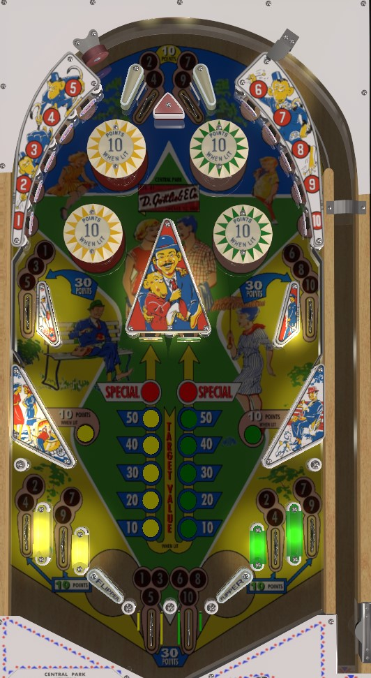

Central Park is the replay version. Hurdy Gurdy if the add a ball version. This guide focuses primarily on Central Park. Differences seen in Hurdy Gurdy are mentioned in a separate section at the end of the guide.
Complete 1-2-3-4-5 to advance the value of the left center standup target, and complete 6-7-8-9-10 to advance the value of the right center standup target. Numbers can be earned at the standup targets around the top of the playfield, or spotted two or three at a time by rollover lanes. After 5 completions of either set, the corresponding center standup target is lit for Special, and completing that number set again also scores a Special.
The below picture is of Central Park, which was taken from the VPX recreation by Tgx and Rosve.
Standup targets score 10 points. Hit a numbered standup target to unlight it. Rollover lanes spot numbers; 1-3-5 are at the left upper side lane and left center out lane, 6-8-10 are at the right upper side lane and right center out lane, and 2-4 and 7-9 can each be spotted from one of the two top lanes and two of the four out lanes.
The yellow and green center standup targets both start out being worth 10 points. Completing 1-2-3-4-5 resets them and adds 10 points to the yellow center standup target value. Completing 6-7-8-9-10 does the same for the green. After 5 advances, a center target is worth Special when hit, and completing the number bank corresponding to that target again will also award an instant Special. Top lanes and side out lanes score 10 points. Upper side lanes and center out lanes score 30 points.
The numbers 2, 4, 7, and 9 correspond to the lower left, upper left, upper right, and lower right pop bumpers. Pop bumpers score 1 point, or 10 points when lit. If the number associated with a pop bumper has been collected, that pop bumper will be lit half of the time, alternating on 1-point switch hits. The two left bumpers are yellow, and the two right bumpers are green; only one bumper of each colouir can be lit at a time, alternating between the two if both corresponding numbers have been collected.
The slingshots, located about 1/3 of the way up the table and above the flippers, score 1 point or 10 when lit; one of the two is always lit, and they alternate on 1-point switch hits.
The table bottom has no slingshots or in lanes; there are 2 out lanes on each side, as well as 2 out lanes in the center between the flippers, which are much wider apart than normal. All side out lanes score 10 points; the left lane in each pair spots numbers 2 and 4 while the right lane in each pair spots 7 and 9. The center out lanes score 30 points; the left spots 1-3-5 and the right spots 6-8-10.
There are no extra balls on Central Park, and Special cannot be set to score points.
The top lanes do not spot numbers; rather, they light the yellow (left lane) or green (right lane) bumpers for the rest of the ball. Instead of both left bumpers being yellow, the top left and bottom right bumpers are yellow; the other two are green. Making the top lane lights both bumpers of that colour.
An extra ball is awarded each time 1 through 10 are completed in full.
Center standup targets work differently; they are lit for 100, 200, 300, or 400 points, or extra ball, rotating through these values based on 10-point switch hits. At all times, the left center out lane shares the same value as the yellow center standup, and the right center out lane holds the same value as the green center standup.
The four side out lanes spot just one number each; from left to right, they are 2, 4, 7, and 9.
Hurdy Gurdy counts down the number of balls to play in the game, adding one to this count when any extra ball is scored. Games start with 3 or 5 balls to play, and up to 10 balls to play can be stored at any one time.
The highest score that can be displayed on Hurdy Gurdy is 9,999, compared to just 1,999 on Central Park.